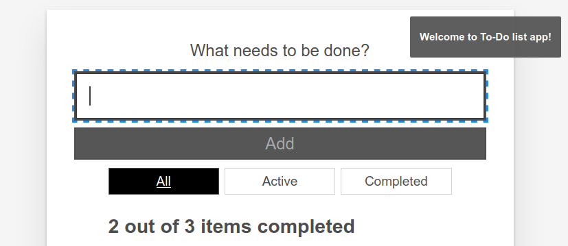
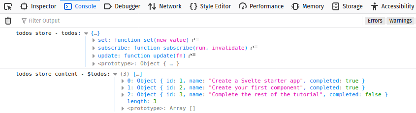
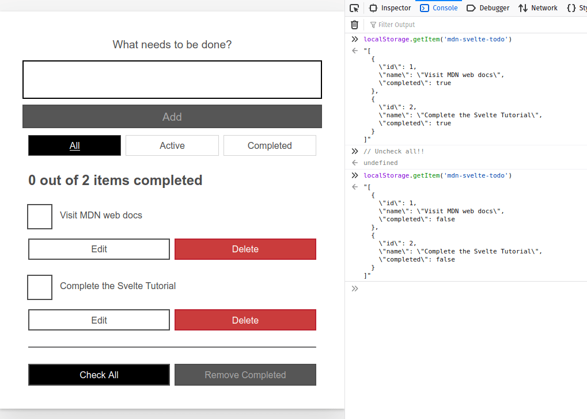

In the last article we completed the development of our app, finished organizing it into components, and discussed some advanced techniques for dealing with reactivity, working with DOM nodes, and exposing component functionality. In this article we will show another way to handle state management in Svelte — Stores. Stores are global data repositories that hold values. Components can subscribe to stores and receive notifications when their values change.
| Prerequisites: |
At minimum, it is recommended that you are familiar with the core HTML, CSS, and JavaScript languages, and have knowledge of the terminal/command line. You'll need a terminal with node + npm installed to compile and build your app. |
|---|---|
| Objective: | Learn how to use Svelte stores |
Using stores we will create an Alert component that shows notifications on screen, which can receive messages from any component. In this case, the Alert component is independent from the rest — it is not a parent or child of any other — so the messages don't fit into the component hierarchy.
We will also see how to develop our own custom store to persist the todo information to web storage, allowing our todos to persist over page reloads.
Clone the github repo (if you haven't already done it) with:
git clone https://github.com/opensas/mdn-svelte-tutorial.git
Then to get to the current app state, run
cd mdn-svelte-tutorial/06-stores
Or directly download the folder's content:
npx degit opensas/mdn-svelte-tutorial/06-stores
Remember to run npm install && npm run dev to start your app in development mode.
To code along with us using the REPL, start at
https://svelte.dev/repl/d1fa84a5a4494366b179c87395940039?version=3.23.2
We have already seen how our components can communicate with each other using props, two-way data binding, and events. In all these cases we were dealing with communication between parent and child components.
But not all application state belongs inside your application's component hierarchy. For example, information about the logged in user, or whether the dark theme is selected or not.
Sometimes, your app state will need to be accessed by multiple components that are not hierarchically related, or by a regular JavaScript module.
Moreover, when your app becomes complicated and your component hierarchy gets complex, it might become too difficult for components to relay data between each other. In that case, moving to a global data store might be a good option. If you’ve already worked with Redux or Vuex, then you'll be familiar with how this kind of store works. Svelte stores offer similar features for state management.
A store is an object with a subscribe() method that allows interested parties to be notified whenever the store value changes, and an optional set() method that allows you to set new values for the store. This minimal API is known as the store contract.
Svelte provides functions for creating readable, writable, and derived stores in the svelte/store module.
Svelte also provides a very intuitive way to integrate stores into its reactivity system using the reactive $store syntax. If you create your own stores honoring the store contract, you get this reactivity syntactic sugar for free.
To show how to work with stores, we will create an Alert component. These kind of widgets might also be known as popup notifications, toast, or notification bubbles.
Our Alert component will displayed by the App component, but any component can send notifications to it; whenever a notification arrives the Alert component will be in charge of displaying it on screen.
Let's start by creating a writable store. Any component will be able to write to this store, and the Alert component will subscribe to it and display a message whenever the store is modified.
Create a new file — stores.js — inside your src directory.
Give it the following content:
import { writable } from 'svelte/store'
export const alert = writable('Welcome to the To-Do list app!')
Note: Stores can be defined and used outside of Svelte components, so you can organize them in any way you please.
In the above code we import the writable() function from svelte/store and use it to create a new store called alert with an initial value of "Welcome to the To-Do list app!". We then export the store.
Let's now create our Alert component and see how we can read values from the store.
Create another new file named src/components/Alert.svelte.
Give it the following content:
<script>
import { alert } from '../stores.js'
import { onDestroy } from 'svelte'
let alertContent = ''
const unsubscribe = alert.subscribe(value => alertContent = value)
onDestroy(unsubscribe)
</script>
{#if alertContent}
<div on:click={() => alertContent = ''}>
<p>{ alertContent }</p>
</div>
{/if}
<style>
div {
position: fixed;
cursor: pointer;
margin-right: 1.5rem;
margin-left: 1.5rem;
margin-top: 1rem;
right: 0;
display: flex;
align-items: center;
border-radius: 0.2rem;
background-color: #565656;
color: #fff;
font-size: 0.875rem;
font-weight: 700;
padding: 0.5rem 1.4rem;
font-size: 1.5rem;
z-index: 100;
opacity: 95%;
}
div p {
color: #fff;
}
div svg {
height: 1.6rem;
fill: currentColor;
width: 1.4rem;
margin-right: 0.5rem;
}
</style>
Let's walk through this piece of code in detail.
alert store.onDestroy() lifecycle function, which lets us execute a callback after the component has been unmounted.alertContent. Remember that we can access top-level variables from the markup, and whenever they are modified the DOM will update accordingly.alert.subscribe(), passing it a callback function as a parameter. Whenever the value of the store changes, the callback function will be called with the new value as its parameter. In the callback function we just assign the value we receive to the local variable, which will trigger the update of the component's DOM.subscribe() method also returns a clean-up function, which takes care of releasing the subscription. So we subscribe when the component is being initialized, and use onDestroy to unsubscribe when the component is unmounted.alertContent variable in our markup, and if the user clicks on the alert we clean it.Alert component.This setup allows us to work with stores in a reactive way. When the value of the store changes, the callback is executed. There we assign a new value to a local variable, and thanks to Svelte reactivity all our markup and reactive dependencies are updated accordingly.
Let's now use our component.
In App.svelte we'll import the component; add the following import statement below the existing one:
import Alert from './components/Alert.svelte'
Then call the Alert component just above the Todos call, like this:
<Alert />
<Todos {todos} />
Load your test app now, and you should now see the Alert message on screen. You may click on it to dismiss it.

$store syntaxThis works, but you'll have to copy and paste all this code every time you want to subscribe to a store:
<script>
import myStore from './stores.js'
import { onDestroy } from 'svelte'
let myStoreContent = ''
const unsubscribe = myStore.subscribe(value => myStoreContent = value)
onDestroy(unsubscribe)
</script>
{myStoreContent}
That's too much boilerplate for Svelte! Being a compiler, Svelte has more resources to make our lives easier. In this case Svelte provides the reactive $store syntax, also known as auto-subscription. In simple terms, you just prefix the store with the $ sign and Svelte will generate the code to make it reactive automatically. So our previous code block can be replaced with this:
<script>
import myStore from './stores.js'
</script>
{$myStore}
And $myStore will be fully reactive. This also applies to your own custom stores. If you implement the subscribe() and set() methods, like we'll do later, the reactive $store syntax will also apply to your stores.
Let's apply this to our Alert component. Update the <script> and markup sections of Alert.svelte as follows:
<script>
import { alert } from '../stores.js'
</script>
{#if $alert}
<div on:click={() => $alert = ''}>
<p>{ $alert }</p>
</div>
{/if}
Check your app again and you'll see that this works just like before. That's much better!
Behind the scenes Svelte has generated the code to declare the local variable $alert, subscribe to the alert store, update $alert whenever the store's content is modified, and unsubscribe when the component is unmounted. It will also generate the alert.set(...) statements whenever we assign a value to $alert.
The end result of this nifty trick is that you can access global stores just as easily as using reactive local variables.
This is a perfect example of how Svelte puts the compiler in charge of better developer ergonomics, not only saving us from typing boiler plate, but also generating less error-prone code.
Writing to our store is just a matter of importing it and executing $store = 'new value'. Let's use it in our Todos component.
Add the following import statement below the existing ones:
import { alert } from '../stores.js'
Update your addTodo() function like so:
function addTodo(name) {
todos = [...todos, { id: newTodoId, name, completed: false }]
$alert = `Todo '${name}' has been added`
}
Update removeTodo() like so:
function removeTodo(todo) {
todos = todos.filter(t => t.id !== todo.id)
todosStatus.focus() // give focus to status heading
$alert = `Todo '${todo.name}' has been deleted`
}
Update the updateTodo() function to this:
function updateTodo(todo) {
const i = todos.findIndex(t => t.id === todo.id)
if (todos[i].name !== todo.name) $alert = `todo '${todos[i].name}' has been renamed to '${todo.name}'`
if (todos[i].completed !== todo.completed) $alert = `todo '${todos[i].name}' marked as ${todo.completed ? 'completed' : 'active'}`
todos[i] = { ...todos[i], ...todo }
}
Add the following reactive block beneath the block that starts with let filter = 'all':
$: {
if (filter === 'all') $alert = 'Browsing all todos'
else if (filter === 'active') $alert = 'Browsing active todos'
else if (filter === 'completed') $alert = 'Browsing completed todos'
}
And finally for now, update the const checkAllTodos and const removeCompletedTodos blocks as follows:
const checkAllTodos = (completed) => {
todos = todos.map(t => ({...t, completed}))
$alert = `${completed ? 'Checked' : 'Unchecked'} ${todos.length} todos`
}
const removeCompletedTodos = () => {
$alert = `Removed ${todos.filter(t => t.completed).length} todos`
todos = todos.filter(t => !t.completed)
}
So basically, we've imported the store and updated it on every event, which causes a new alert to show each time. Have a look at your app again, and try adding/deleting/updating a few todos!
As soon as we execute $alert = ..., Svelte will run alert.set(...). Our Alert component — like every subscriber to the alert store — will be notified when it receives a new value, and thanks to Svelte reactivity its markup will be updated.
We could do the same within any component or .js file.
Note: outside of Svelte components you cannot use the $store syntax. That's because the Svelte compiler won't touch anything outside of Svelte components. In that case you'll have to rely on the store.subscribe() and store.set() methods.
It's a bit annoying having to click on the alert to get rid of it. It would be better if the notification just disappeared after a couple of seconds.
Lets see how to do that. We'll specify a prop with the milliseconds to wait before clearing the notification, and we'll define a timeout to remove the alert. We'll also take care of clearing the timeout when the Alert component is unmounted to prevent memory leaks.
Update the <script> section of your Alert.svelte component like so:
<script>
import { onDestroy } from 'svelte'
import { alert } from '../stores.js'
export let ms = 3000
let visible
let timeout
const onMessageChange = (message, ms) => {
clearTimeout(timeout)
if (!message) { // hide Alert if message is empty
visible = false
} else {
visible = true // show alert
if (ms > 0) timeout = setTimeout(() => visible = false, ms) // and hide it after ms milliseconds
}
}
$: onMessageChange($alert, ms) // whenever the alert store or the ms props changes run onMessageChange
onDestroy(()=> clearTimeout(timeout)) // make sure we clean-up the timeout
</script>
And update the Alert.svelte markup section like so:
{#if visible}
<div on:click={() => visible = false}>
<svg xmlns="http://www.w3.org/2000/svg" viewBox="0 0 20 20"><path d="M12.432 0c1.34 0 2.01.912 2.01 1.957 0 1.305-1.164 2.512-2.679 2.512-1.269 0-2.009-.75-1.974-1.99C9.789 1.436 10.67 0 12.432 0zM8.309 20c-1.058 0-1.833-.652-1.093-3.524l1.214-5.092c.211-.814.246-1.141 0-1.141-.317 0-1.689.562-2.502 1.117l-.528-.88c2.572-2.186 5.531-3.467 6.801-3.467 1.057 0 1.233 1.273.705 3.23l-1.391 5.352c-.246.945-.141 1.271.106 1.271.317 0 1.357-.392 2.379-1.207l.6.814C12.098 19.02 9.365 20 8.309 20z"/></svg>
<p>{ $alert }</p>
</div>
{/if}
Here we first create the prop ms with a default value of 3000 (milliseconds). Then we create an onMessageChange() function that will take care of controlling whether the Alert is visible or not. With $: onMessageChange($alert, ms) we tell Svelte to run this function whenever the $alert store or the ms prop changes.
Whenever the $alert store changes, we'll clean up any pending timeout. If $alert is empty, we set visible to false and the Alert will be removed from the DOM. If it is not empty, we set visible to true and use the setTimeout() function to clear the alert after ms milliseconds.
Finally, with the onDestroy() lifecycle function, we make sure to call the clearTimeout() function.
We also added an SVG icon above the alert paragraph, to make it look a bit nicer. Try it out again, and you should see the changes.
Our Alert component is working fine, but it's not very friendly to assistive technologies. The problem is elements that are dynamically added and removed from the page. While visually evident to users who can see the page, they may not be so obvious to users of assistive technologies, like screen readers. To handle those situations, we can take advantage of ARIA live regions, which provide a way to programmatically expose dynamic content changes so that they can be detected and announced by assistive technologies.
We can declare a region that contains dynamic content that should be announced by assistive technologies with the aria-live property followed by the politeness setting, which is used to set the priority with which screen readers should handle updates to that regions. The possible settings are off, polite, or assertive.
For common situations, you also have several predefined specialized role values that can be used, like log, status and alert.
In our case, just adding a role="alert" to the <div> container will do the trick, like this:
<div role="alert" on:click={() => visible = false}>
In general, testing your applications using screen readers is a good idea, not only to discover accessibility issues but also to get used to how visually impaired people use the Web. You have several options, like NVDA for Windows, ChromeVox for Chrome, Orca on Linux, and VoiceOver for Mac OS X and iOS, among other options.
To learn more about detecting and fixing accessibility issues check out our Handling common accessibility problems article.
Our little app lets us manage our todos quite easily, but is rather useless if we always get the same list of hardcoded todos when we reload it. To make it truly useful, we have to find out how to persist our todos.
First we need some way for our Todos component to give back the updated todos to its parent. We could emit an updated event with the list of todos, but it's easier just to bind the todos variable. Let's open App.svelte and try it.
First of all, add the following line below your todos array:
$: console.log('todos', todos)
Next, update your Todos component call as follows:
<Todos bind:todos />
Remember: <Todos bind:todos /> is just a shortcut for <Todos bind:todos={todos} />.
Go back to your app, try adding some todos, then go to your developer tools web console. You'll see that every modification we make to our todos is reflected in the todos array defined in App.svelte thanks to the bind directive.
Now we have to find a way to persist these todos. We could implement some code in our App.svelte component to read and save our todos to web storage or to a web service.
But wouldn't be better if we could develop some generic store that allows us to persist its content? This would allow us to use it just like any other store, and abstract away the persistence mechanism. We could create a store that syncs its content to web storage, and later develop another one that syncs against a web service. Switching between them would be trivial and we wouldn't have to touch App.svelte at all.
So let's start by using a regular writable store to save our todos.
Open the file stores.js and add the following store below the existing one:
export const todos = writable([])
That was easy. Now we need to import the store and use it in App.svelte. Just remember that to access the todos now we have to use the $todos reactive $store syntax.
Update your App.svelte file like this:
<script>
import Todos from './components/Todos.svelte'
import Alert from './components/Alert.svelte'
import { todos } from './stores.js'
$todos = [
{ id: 1, name: 'Create a Svelte starter app', completed: true },
{ id: 2, name: 'Create your first component', completed: true },
{ id: 3, name: 'Complete the rest of the tutorial', completed: false }
]
</script>
<Alert />
<Todos bind:todos={$todos} />
Try it out; everything should work. Next we'll see how to define our own custom stores.
You can create your own stores without relying on svelte/store by implementing the store contract. Its features must work like so:
subscribe() method, which must accept as its argument a subscription function. All of a store's active subscription functions must be called whenever the store's value changes.subscribe() method must return an unsubscribe() function, which when called must stop its subscription.set() method, which must accept as its argument a new value for the store, and which synchronously calls all of the store's active subscription functions. A store with a set() method is called a writable store.First of all, let's add the following console.log() statements to our App.svelte component to see the todos store and its content in action. Add these lines below the todos array:
console.log('todos store - todos:', todos)
console.log('todos store content - $todos:', $todos)
When you run the app now, you'll see something like this in your web console:

As you can see, our store is just an object containing subscribe(), set(), and update() methods, and $todos is our array of todos.
Just for reference, here's a basic working store implemented from scratch:
export const writable = (initial_value = 0) => {
let value = initial_value // content of the store
let subs = [] // subscriber's handlers
const subscribe = (handler) => {
subs = [...subs, handler] // add handler to the array of subscribers
handler(value) // call handler with current value
return () => subs = subs.filter(sub => sub !== handler) // return unsubscribe function
}
const set = (new_value) => {
if (value === new_value) return // same value, exit
value = new_value // update value
subs.forEach(sub => sub(value)) // update subscribers
}
const update = (update_fn) => set(update_fn(value)) // update function
return { subscribe, set, update } // store contract
}
Here we declare subs, which is an array of subscribers. In the subscribe() method we add the handler to the subs array and return a function that, when executed, will remove the handler from the array.
When we call set(), we update the value of the store, and call each handler — passing the new value as a parameter.
Anyway, usually you don't implement stores from scratch; instead you'd use the writable store to create custom stores with domain-specific logic. In the following example we create a counter store, which will only allow us to add one to the counter or reset its value:
import { writable } from 'svelte/store';
function myStore() {
const { subscribe, set, update } = writable(0);
return {
subscribe,
addOne: () => update(n => n + 1),
reset: () => set(0)
};
}
If our To-do list app gets too complex, we could let our todos store handle every state modification. We could move all the methods that modify the todo array (like addTodo(), removeTodo(), etc) from our Todos component to the store. If you have a central place where all the state modification is applied, components could just call those methods to modify the app's state and reactively display the info exposed by the store. Having a unique place to handle state modifications makes it easier to reason about the state flow and spot issues.
Svelte won't force you to organize your state management in a specific way, it just provides the tools for you to choose how to handle it.
Our To-do list app is not particularly complex, so we won't move all our modification methods into a central place. We'll just leave them as they are, and instead concentrate on persisting our todos.
Note: if you are following this guide working from the Svelte REPL you won't be able to complete this step. For security reasons the Svelte REPL works in a sandboxed environment which will not let you access web storage, and you will get a "The operation is insecure" error. In order to follow this section you'll have to clone the repo and go to the mdn-svelte-tutorial/06-stores folder or you can directly download the folder's content with npx degit opensas/mdn-svelte-tutorial/06-stores.
So, to implement a custom store that saves its content to web storage, we will need a writable store that:
Moreover, because web storage only supports saving string values, we will have to convert from object to string when saving, and vice versa when we are loading the value from local storage.
Create a new file called localStore.js, in your src directory.
Give it the following content:
import { writable } from 'svelte/store';
export const localStore = (key, initial) => { // receives the key of the local storage and an initial value
const toString = (value) => JSON.stringify(value, null, 2) // helper function
const toObj = JSON.parse // helper function
if (localStorage.getItem(key) === null) { // item not present in local storage
localStorage.setItem(key, toString(initial)) // initialize local storage with initial value
}
const saved = toObj(localStorage.getItem(key)) // convert to object
const { subscribe, set, update } = writable(saved) // create the underlying writable store
return {
subscribe,
set: (value) => {
localStorage.setItem(key, toString(value)) // save also to local storage as a string
return set(value)
},
update
}
}
localStore will be a function that when executed initially reads its content from web storage, and returns an object with three methods: subscribe(), set(), and update().localStore, we'll have to specify the key of the web storage and an initial value. We then check if the value exists in web storage and, if not, we create it.localStorage.getItem(key) and localStorage.setItem(key, value) methods to read and write information to web storage, and the toString() and toObj() (which uses JSON.parse()) helper functions to convert the values.Notice that we only had to redefine the set() method, adding the operation to save the value to web storage. The rest of the code is mostly initializing and converting stuff.
Now we will use our local store from stores.js to create our locally persisted todos store.
Update stores.js like so:
import { writable } from 'svelte/store'
import { localStore } from './localStore.js'
export const alert = writable('Welcome to the To-Do list app!')
const initialTodos = [
{ id: 1, name: 'Visit MDN web docs', completed: true },
{ id: 2, name: 'Complete the Svelte Tutorial', completed: false },
]
export const todos = localStore('mdn-svelte-todo', initialTodos)
Using localStore('mdn-svelte-todo', initialTodos), we are configuring the store to save the data in web storage under the key mdn-svelte-todo. We also set a couple of todos as initial values.
Now let's get rid of the hardcoded todos in App.svelte. Update its contents like this — we are basically just deleting the $todos array and the console.log() statements:
<script>
import Todos from './components/Todos.svelte'
import Alert from './components/Alert.svelte'
import { todos } from './stores.js'
</script>
<Alert />
<Todos bind:todos={$todos} />
Note: This is the only change we have to make in order to use our custom store. App.svelte is completely transparent in terms of what kind of store we are using.
Go ahead and try your app again. Create a few todos and then close the browser. You may even stop the Svelte server and restart it. Upon revisiting the URL, your todos will still be there.
You can also inspect it in the DevTools console. In the web console, enter the command localStorage.getItem('mdn-svelte-todo'). Make some changes to your app, like pressing the Uncheck All button, and check the web storage content once more. You will get something like this:

Svelte stores provide a very simple and lightweight, but extremely powerful, way to handle complex app state from a global data store in a reactive way. And because Svelte compiles our code, it can provide the $store auto-subscription syntax that allows us to work with stores in the same way as local variables. Because stores has a minimal API, it's very simple to create our custom stores to abstract away the inner workings of the store itself.
Let's change the subject now, and do something fun and different — let's add an animation to our alerts. Svelte provides a whole module to define transitions and animations so we can make our user interfaces more appealing.
A transition is applied with the transition:fn directive, and is triggered by an element entering or leaving the DOM as a result of a state change. The svelte/transition module exports seven functions: fade, blur, fly, slide, scale, draw, and crossfade.
Let's give our Alert component a fly transition. We'll open the Alert.svelte file and import the fly function from the svelte/transition module.
Put the following import statement below the existing ones:
import { fly } from 'svelte/transition'
To use it, update your opening <div> tag like so:
<div role="alert" on:click={() => visible = false}
transition:fly
>
Transitions can also receive parameters, like this:
<div role="alert" on:click={() => visible = false}
transition:fly="\{{delay: 250, duration: 300, x: 0, y: -100, opacity: 0.5}}"
>
Note: the double curly braces are not special Svelte syntax. It's just a literal JavaScript object being passed as a parameter to the fly transition.
Try your app out again — you'll see that the notifications now look a bit more appealing.
Note: Being a compiler allows Svelte to optimize the size of our bundle by excluding features that are not used. In this case, if we compile our app for production with npm run build, our public/build/bundle.js file will weight a little less than 22KB. If we remove the transitions:fly directive Svelte is smart enough to realize the fly function is not being used and the bundle.js file size will drop down to just 18KB.
This is just the tip of the iceberg. Svelte has lots of options for dealing with animations and transitions. Svelte also supports specifying different transitions to apply when the element is added or removed from the DOM with the in:fn/out:fn directives, and it also allows you to define your custom CSS and JavaScript transitions. It also has several easing functions to specify the rate of change over time. Have a look at the ease visualizer to explore the various ease functions available.
To see the state of the code as it should be at the end of this article, access your copy of our repo like this:
cd mdn-svelte-tutorial/07-next-steps
Or directly download the folder's content:
npx degit opensas/mdn-svelte-tutorial/07-next-steps
Remember to run npm install && npm run dev to start your app in development mode.
To see the current state of the code in a REPL, visit:
https://svelte.dev/repl/378dd79e0dfe4486a8f10823f3813190?version=3.23.2
In this article we added two new features: an Alert component and persisting todos to web storage.
Alert component to show how to implement cross-component state management using stores. We also saw how to auto-subscribe to stores to seamlessly integrate them with the Svelte reactivity system.transition directive to implement animations on DOM elements.In the next article we will learn how add TypeScript support to our Svelte application. To take advantage of all its features, we will also port our entire application to TypeScript.
{{PreviousMenuNext("Learn/Tools_and_testing/Client-side_JavaScript_frameworks/Svelte_reactivity_lifecycle_accessibility","Learn/Tools_and_testing/Client-side_JavaScript_frameworks/Svelte_TypeScript", "Learn/Tools_and_testing/Client-side_JavaScript_frameworks")}}